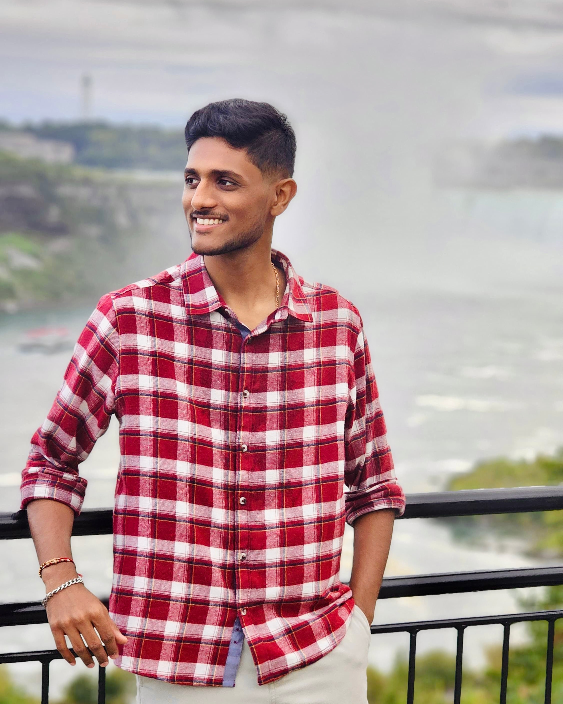

Rutul Manani
I am a passionate and dedicated UI/UX designer with a background in Industrial and Product Design. With over 2.5 years of experience across industries such as healthcare, education, finance, insurance, and furniture, I have developed a strong ability to transform complex problems into intuitive and user-friendly design solutions. Currently, I am pursuing a Post Graduate Certificate in User Experience Design at Humber College, where I am deepening my skills in creating impactful digital experiences that balance functionality and aesthetics.
I have utilized a range of design methodologies, including usability testing, heuristic evaluation, wireframing, and prototyping, to deliver effective solutions. My professional journey includes roles at Studioworks, Vosyn, and Clarion Insurance, where I contributed to projects that enhanced user satisfaction and achieved measurable outcomes. I take pride in collaborating with cross-functional teams and enjoy the challenge of designing products that resonate with users and address their needs.
Outside of my work and studies, I enjoy exploring creative outlets and staying updated with emerging design trends and technologies. I thrive in dynamic environments where I can apply my problem-solving skills and push the boundaries of conventional design thinking. My portfolio reflects my dedication to crafting meaningful and user-centered experiences, and I am eager to continue growing as a UI/UX designer while making a positive impact.